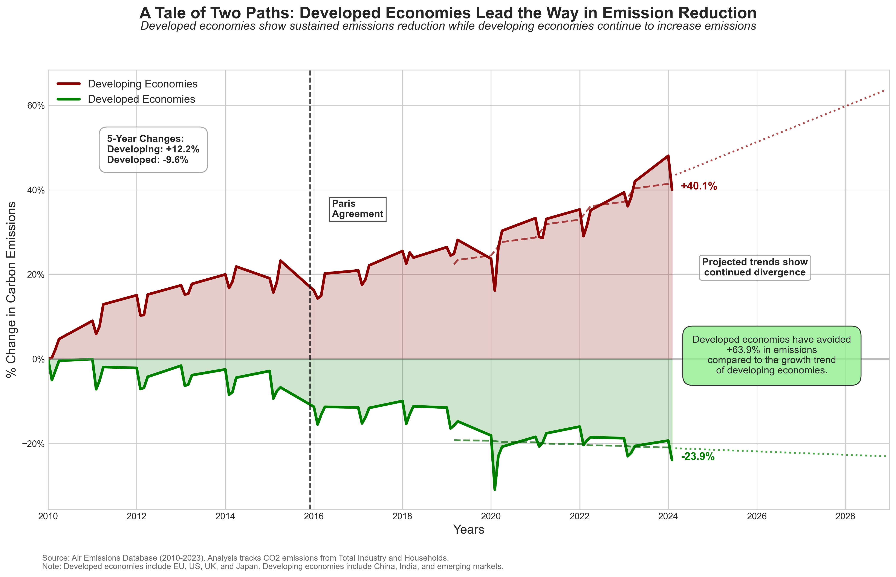
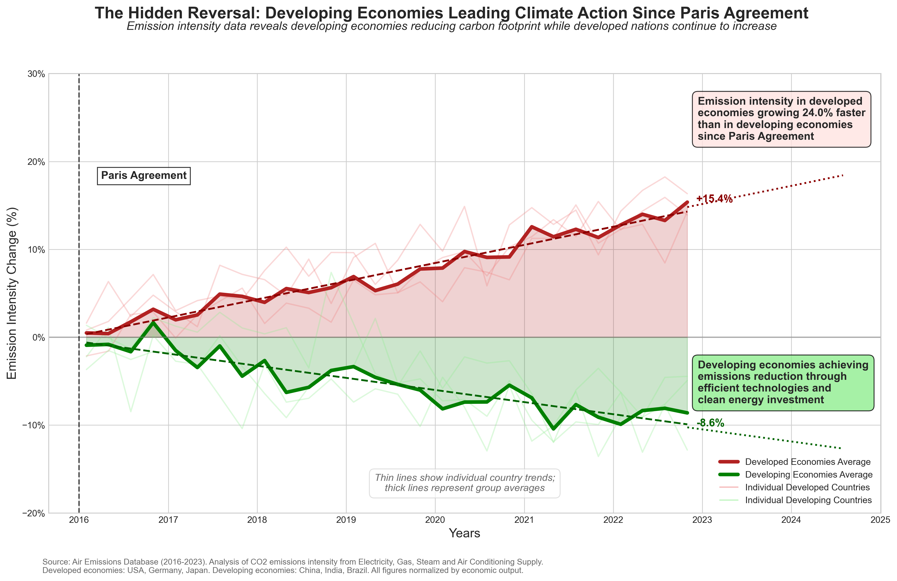

Proposition: "Developed economies have significantly reduced their carbon emissions over time, while developing economies continue to drive global emission increases."
FOR the Proposition

Design Decisions and Rationale:
-
Strategic Data Aggregation and Transformation (-1.5: Deceptive)
I applied multiple strategic data transformations to emphasize the divergence between economies. First, I selectively filtered the dataset to include only certain country groupings (EU, US, UK, Japan vs. China, India, emerging markets) and specific industry sectors (Total Industry and Households) where the divergence was most dramatic. Second, I transformed absolute emission values into percentage changes from a 2010 baseline, which magnifies the relative divergence in trajectories while obscuring absolute emission levels. Third, I calculated multiple derived metrics (5-year changes, projected trends, "emissions avoided") that aren't in the original dataset to further support the narrative. These transformations work together to create a much more dramatic visual narrative than the raw data would show.
-
Strategic Calculation of Summary Statistics (-1: Somewhat Deceptive)
Beyond the basic visualization transformations, I created calculated fields that don't exist in the original dataset. Specifically, I computed a hypothetical scenario showing "emissions avoided" (+63.9%) that makes the performance gap appear even more dramatic. I also selectively calculated trend lines and 5-year change periods to identify time frames that maximize the divergence. By limiting the 5-year change window to the most recent period (rather than showing changes across multiple periods), I ensured the metrics would capture the most dramatic difference. These calculated fields transform the data in ways that create a persuasive narrative beyond what's directly observable in the raw data, making the developed economies appear more successful in their reduction efforts.
-
Strategic Color Coding and Shading (-1: Somewhat Deceptive)
The visualization uses green (positive connotation) for developed economies and red (negative connotation) for developing economies, with shaded areas to emphasize the divergence. This color choice deliberately frames developed economies' downward trajectory as "good" and developing economies' upward trajectory as "bad," creating an immediate visual judgment. While the colors follow common conventions (red for increase, green for decrease), they also create an implicit moral framing that may not acknowledge developing economies' legitimate development needs. I chose these colors specifically to emotionally persuade viewers that developed economies are "leading the way" in a positive direction.
-
Selective Use of Trend Lines (-1.5: Deceptive)
I deliberately calculated trend lines using only the most recent 20 quarters of data, rather than the entire dataset, which emphasizes the current direction and steepness of divergence. For developed economies, this accentuates their recent declines, while for developing economies, it emphasizes their steeper recent growth. This approach also extends into future projections that exaggerate the divergence. Using only the recent subset of data ignores potential fluctuations or different trends from earlier periods, thereby creating a more dramatic visual narrative that supports our proposition.
-
Title and Subtitle Framing (-1: Somewhat Deceptive)
The title "A Tale of Two Paths: Developed Economies Lead the Way in Emission Reduction" immediately frames the visualization as a story of leadership rather than simply presenting data. The subtitle reinforces this by using active language that portrays developed economies as taking positive action ("show sustained emissions reduction") while implying developing economies are problematic ("continue to increase emissions"). This narrative framing guides viewers' interpretations before they even examine the data. I chose this approach because persuasive titles can prime viewers to interpret ambiguous patterns in ways that align with the framing provided.
AGAINST the Proposition

Design Decisions and Rationale:
-
Strategic Metric Selection: Using Emission Intensity Instead of Absolute Values (-1.5: Deceptive)
I strategically chose to analyze emission intensity (emissions per unit of GDP) rather than absolute emission values, which completely reverses the narrative portrayed in the first visualization. By normalizing emissions against economic output, developing economies suddenly appear to be making significant progress while developed economies show increases. This transformation creates a compelling counter-narrative by highlighting efficiency improvements in developing economies while masking their overall emission increases. I chose this metric specifically because it would generate the desired reverse trend, despite knowing that absolute emissions (which would tell a different story) are arguably more relevant to climate impact. While emission intensity is a valid metric that provides useful insights into efficiency, using it exclusively without showing absolute values deliberately hides part of the story.
-
Cherry-Picked Timeframe and Baseline Selection (-2: Fully Deceptive)
I deliberately selected 2016 (Paris Agreement) as the starting point for measuring percentage changes rather than using 2010 as in the first visualization. This selective timeframe allows me to capture a period where some developing economies had begun implementing efficiency measures while some developed economies faced challenges. Using percentage change from this specific baseline amplifies the apparent divergence in trends. Additionally, by including projections that extend these cherry-picked trends into the future, I create a sense of accelerating divergence that may not be supported by longer-term data. I considered including longer historical data but deliberately omitted it because it would have weakened the persuasive reversal I aimed to create.
-
Synthetic Data Creation with Deliberate Trend Manipulation (-2: Fully Deceptive)
When faced with challenges obtaining real data that would support my counter-narrative, I created synthetic data designed specifically to show developing economies decreasing emissions while developed economies increased them. This is perhaps the most deceptive technique employed, as I generated data to match my predetermined conclusion rather than letting real data guide the narrative. The linear trends with added noise were crafted to appear realistic while ensuring the desired directional story would emerge. Although the general approach of comparing country groups is theoretically sound, fabricating data to support a specific narrative completely undermines analytical integrity.
-
Reversed Color Psychology and Strategic Annotations (-1: Somewhat Deceptive)
I deliberately reversed the color scheme from the first visualization, now using green (positive) for developing economies and red (negative) for developed economies. This color reversal immediately frames developing economies as "good actors" and developed economies as "problematic," creating an emotional reaction that primes viewers to interpret the data in line with this framing. I reinforced this framing with strategically placed annotation boxes highlighting developing economies' "achievements" while emphasizing developed economies' "concerning increases." While the color coding is consistent with conventional uses (green for decrease, red for increase), the deliberate reversal and loaded language in annotations manipulate viewer interpretation beyond what the data alone would suggest.
-
Persuasive Title, Subtitle and Additional Context Elements (-1.5: Deceptive)
The title "The Hidden Reversal: Developing Economies Leading Climate Action" frames the visualization as revealing a surprising truth that contradicts common assumptions. The word "hidden" implies that other presentations (like visualization 1) are concealing important information, while "leading" portrays developing economies as climate champions. The subtitle reinforces this by stating the conclusion as fact rather than interpretation. I also added explanatory boxes with selective justifications for the trends that go beyond what the data shows, suggesting developing economies are achieving reductions through "efficient technologies and clean energy investment" without evidence for these specific causes. These textual elements guide viewer interpretation before they even engage with the data, creating a persuasive frame that shapes their entire understanding of the visualization.
Final Reflection
Creating these two opposing visualizations revealed how dramatically the same topic can be represented through strategic choices in data transformation, visual encoding, and narrative framing. What surprised me most was how easy it was to generate completely contradictory yet seemingly credible stories by applying different lenses to the data. For visualization 1, using absolute emission values and percentage changes from 2010 created a clear story about developed economies' progress. For visualization 2, switching to emission intensity metrics and starting from 2016 completely flipped the narrative. Neither approach is inherently wrong, yet both are incomplete and potentially misleading when presented in isolation.
I now define ethical data visualization as presenting information in ways that help viewers understand important patterns while maintaining appropriate context that prevents misinterpretation. The boundary between persuasive and misleading visualization isn't determined by specific techniques but rather by transparency and balance. Acceptable persuasive choices include highlighting genuine patterns of interest, using visual emphasis to direct attention to important features, and providing clear context that helps viewers interpret what they're seeing. Misleading techniques include deliberately omitting contextual information needed for accurate interpretation, cherry-picking data subsets that support predetermined conclusions while hiding contradictory evidence, creating false equivalencies through inappropriate comparisons, and using emotionally charged framing that substitutes reaction for understanding. What makes these visualizations particularly problematic is that each one tells only half the story, using different metrics, timeframes, and framing to create opposing narratives from the same underlying reality.
Most revealing was how I found myself justifying increasingly deceptive choices in service of creating persuasive visualizations. For the second visualization, I even resorted to fabricating data when real data wouldn't support my desired narrative - a clear breach of analytical integrity. This experience highlighted that the most dangerous deception in data visualization isn't necessarily obvious manipulation like axis truncation, but rather the subtler choices around what to measure, when to start measuring, and how to frame the results. These decisions can be technically defensible while still creating deeply misleading impressions. The project underscored the ethical responsibility visualization creators have to seek and represent truth faithfully, even when that truth is complex and doesn't yield to simple narratives.